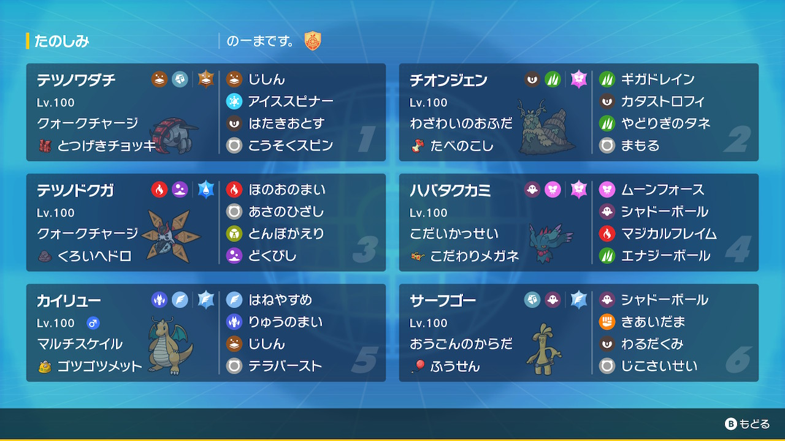

動画
パーティ画像

努力値
テツノワダチ @ とつげきチョッキ
クォークチャージ / ようき
169(28)-164(252)-140-x-90-170(228)
チオンジェン @ たべのこし
わざわいのおふだ / おだやか
192(252)-x-150(236)-116(4)-172(12)-91(4)
テツノドクガ @ くろいヘドロ
クォークチャージ / おだやか
187(252)-81-80-161(4)-178(252)-130
ハバタクカミ @ こだわりメガネ
こだいかっせい / おくびょう
130-x-75-187(252)-156(4)-205(252)
カイリュー @ ゴツゴツメット
マルチスケイル / わんぱく
197(244)-156(12)-139(92)-x-121(4)-120(156)
サーフゴー @ ふうせん
おうごんのからだ / ずぶとい
194(252)-x-157(220)-153-111-109(36)
クォークチャージ / ようき
169(28)-164(252)-140-x-90-170(228)
チオンジェン @ たべのこし
わざわいのおふだ / おだやか
192(252)-x-150(236)-116(4)-172(12)-91(4)
テツノドクガ @ くろいヘドロ
クォークチャージ / おだやか
187(252)-81-80-161(4)-178(252)-130
ハバタクカミ @ こだわりメガネ
こだいかっせい / おくびょう
130-x-75-187(252)-156(4)-205(252)
カイリュー @ ゴツゴツメット
マルチスケイル / わんぱく
197(244)-156(12)-139(92)-x-121(4)-120(156)
サーフゴー @ ふうせん
おうごんのからだ / ずぶとい
194(252)-x-157(220)-153-111-109(36)